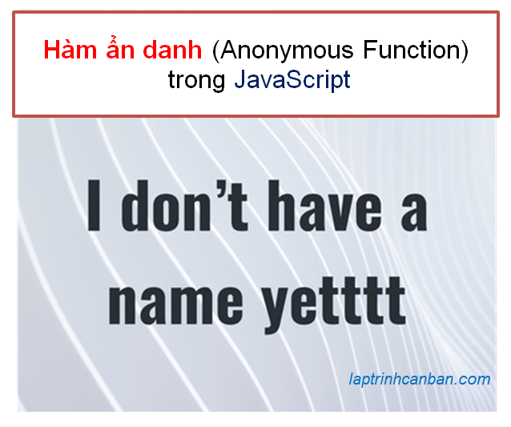
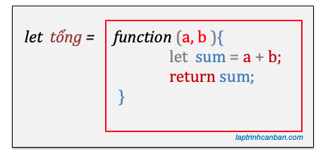

Có 4 phương pháp tạo hàm trong JavaScript là sử dụng từ khóa function, sử dụng biểu thức hàm, sử dụng hàm tạo (constructor) và sử dụng hàm Arrow. Trong đó, với phương pháp sử dụng biểu thức hàm để tạo hàm, chúng ta có thể tạo ra hàm ẩn danh (Anonymous Function) trong JavaScript. Vậy biểu thức hàm là gì, hàm ẩn danh là gì, cách tạo và cách sử dụng hàm ẩn danh như thế nào, chúng ta hãy cùng tìm hiểu trong bài học hôm nay.
- Bài viết liên quan: Function trong JavaScript với cách tạo và gọi hàm.
Hàm ẩn danh (Anonymous Function) trong JavaScript
Hàm ẩn danh (Anonymous Function) trong JavaScript là gì
Trong JavaScript, một hàm ẩn danh là một hàm được định nghĩa mà không có tên. Hàm ẩn danh cũng tương tự như với các hàm bình thường trong JavaScript, tuy nhiên điểm khác biệt là nó không được đặt tên khi khai báo hàm.

Nói cách khác, một hàm mà có tên trong JavaScript thì sẽ không được gọi là hàm ẩn danh.
Và một hàm ẩn danh sẽ được tạo ra bởi biểu thức hàm (function literal) trong JavaScript.
Biểu thức hàm (function literal) là gì
Biểu thức hàm (function literal) là một biểu thức dùng để xác định một hàm ẩn danh trong JavaScript.
Đây là một phương pháp khai báo hàm mới được thêm vào từ JavaScript 1.2 trở đi.
Biểu thức hàm có thể được hiểu là phần còn lại sau khi lược bỏ tên hàm khi chúng ta khai báo hàm trong JavaScript bằng từ khóa function.
Ví dụ chúng ta khai báo một hàm tính tổng 2 số sau đây bằng function:
function findsum(a, b) { |
Nếu bỏ tên hàm findsum đi thì phần còn lại sẽ chính là biểu thức hàm, và chúng ta sử dụng nó để khai báo một hàm ẩn danh. Phần ô vuông dưới đây chính là biểu thức hàm trong JavaScript.

Biểu thức hàm trong JavaScript có khả năng gán vào một biến, do đó nó có thể được sử dụng như là đối số của một hàm khác trong cùng chương trình. Chúng ta sẽ làm rõ vấn đề này ở phần sau.
Khai báo hàm ẩn danh bằng biểu thức hàm trong JavaScript
Cú pháp khai báo hàm ẩn danh bằng biểu thức hàm trong JavaScript cũng tương tự như với hàm bình thường trong JavaScript, chúng ta cũng sử dụng từ khóa function nhưng sẽ bỏ đi phần tên hàm như sau:
function (tham số 1, tham số 2, …) {
Câu lệnh 1 trong hàm;
Câu lệnh 2 trong hàm;
…
return giá trị trả về;
}
Đằng sau từ khóa function, chúng ta viết các tham số sử dụng trong hàm bên trong cặp dấu (), cũng như viết các câu lệnh xử lý hàm bên trong cặp dấu {}. Khi cần trả về giá trị từ hàm, chúng ta sẽ viết thêm lệnh return.
Nếu trong hàm có nhiều tham số, chúng ta sẽ viết chúng cách nhau bởi dấu phẩy. Nếu không sử dụng tham số trong hàm, chúng ta có thể lược bỏ chúng như sau:
function () {
Câu lệnh 1 trong hàm;
Câu lệnh 2 trong hàm;
…
return giá trị trả về;
}
Sau khi khai báo hàm ẩn danh, một function object được tạo ra. Chúng ta có thể gán fucntion object này vào một biến có tên, hoặc là sử dụng nó như đối số trong một hàm khác.
Và mặc dù hàm vô danh vốn không có tên nhưng khi chúng ta gán nó vào một biến, chúng ta có thể gọi tên hàm khi cần dùng như ví dụ cụ thể:
let findsum = function (a, b) { |
Một ví dụ khác về hàm ẩn danh khác không chứa tham số cũng như giá trị trả về:
let greeting = function () { |
Lưu ý là sau khi khai báo một hàm ẩn danh trong JavaScript, nếu chúng ta không sử dụng nó ngay, ví dụ như gán nó vào một biến hoặc là sử dụng nó trong một hàm khác, thì lỗi sẽ bị xảy ra. Ví dụ:
function (a, b) { |
Để tránh lỗi này, khi bạn muốn khai báo một hàm ẩn danh mà chưa sử dụng nó luôn, hãy đặt hàm ẩn danh đó trong cặp dấu ngoặc (), và lỗi cũng sẽ không bị xảy ra như sau:
(function (a, b) { |
Cách gọi hàm ẩn danh trong JavaScript
Gán hàm ẩn danh vào một biến và gọi tên biến khi dùng hàm
Sau khi khai báo hàm ẩn danh và gán vào một biến có tên trong JavaScript, chúng ta đơn giản gọi tên biến ấy ra mỗi khi cần sử dụng tới hàm ẩn danh này.
Cách gọi hàm ẩn danh cũng tương tự với các hàm thông thường khác trong JavaScript, chúng ta đặt các đối số truyền vào hàm giữa cặp dấu (), và trong trường hợp có nhiều đối số truyền vào hàm, chúng ta sẽ đặt chúng cách nhau bởi dấu , như sau:
biến (đối số 1, đối số 2 , … )
Trong trường hợp không có đối số nào được truyền vào hàm, chúng ta có thể lược bỏ đi đối số như sau:
biến ()
Ví dụ cụ thể, chúng ta khai báo một hàm ẩn danh dùng để tính tổng các số nhập vào, và gọi hàm ẩn danh đó như sau:
let findsum = function (a, b) { |
Tương tự như với một hàm ẩn danh không có giá trị trả về và tham số, chúng ta sẽ gọi hàm như sau:
let sayhi = function () { |
Gọi trực tiếp một hàm ẩn danh trong JavaScript
Chúng ta cũng có thể thực thi trực tiếp một hàm ẩn danh trong JavaScript mà không cần thông qua gán nó vào biến, bằng cách ứng dụng mô hình IIFE (biểu thức hàm chạy luôn - Immediately Invokable Function Expression). Cú pháp khi này sẽ là:
( function (tham số 1, tham số 2, …) {
Câu lệnh 1 trong hàm;
Câu lệnh 2 trong hàm;
…
return giá trị trả về;
} ) ( đối số 1, đối số 2, …)
Ví dụ cụ thể, chúng ta khai báo và gọi trực tiếp một hàm ẩn danh như sau:
(function (a, b) { |
Chúng ta đơn giản viết các đối số trong cặp dấu ngoặc () và truyền trực tiếp vào hàm ngay khi khai báo nó. Cách viết trên sẽ tương tự với các công đoạn khai báo hàm ẩn danh, rồi sau đó gọi hàm như sau:
let sum = function (a, b) { |
Vị trí khai báo và gọi hàm ẩn danh trong chương trình JavaScript
Giống như các hàm khác trong JavaScript, chúng ta cần khai báo hàm ẩn danh xong, rồi mới có thể sử dụng nó. Chúng ta không thể gọi hàm ẩn danh trước khi tạo ra nó, vì lỗi sau đây sẽ xảy ra.
dispHello(); |
Do đó, chúng ta cần phải viết lệnh gọi một hàm ẩn danh trong JavaScript chỉ sau khi đã khai báo nó xong.
Hàm ẩn danh trong JavaScript được sử dụng khi nào?
Sử dụng hàm ẩn danh để khai báo các hàm chỉ sử dụng một lần duy nhất trong chương trình
Với các hàm mà chúng ta chỉ cần gọi một lần duy nhất trong chương trình, ví dụ như hàm call back, hoặc là hàm xử lý event chẳng hạn, việc định nghĩa và đặt tên từng hàm một như thế sẽ khiến bạn phải lo lắng về việc liệu tên hàm có trùng lặp với các tên biến hoặc hàm khác hay không.
Tuy nhiên với việc sử dụng hàm ẩn danh trong JavaScript, chúng ta không cần thiết phải đặt tên khi khai báo từng hàm một trong chương trình như ở trên.
Hàm ẩn danh trong JavaScript được xử dụng rộng rãi trong cả các ứng dụng phổ biến như Facebook SDK hay Google Analystics chẳng hạn. Bạn có thể chưa hiểu code, nhưng thực tế là các nhà lập trình của các gã khổng lồ Facebook và Google đã viết và gọi trực tiếp các hàm ẩn danh như Kiyoshi đã hướng dẫn ở phần trên với các mã lệnh như sau:
Facebook SDK
(function(d, s, id) { |
Google Analytics
(function(i,s,o,g,r,a,m){i['GoogleAnalyticsObject']=r;i[r]=i[r]||function(){ |
Sử dụng hàm ẩn danh như là đối số của một hàm khác trong chương trình.
Lại nữa, biểu thức hàm trong JavaScript có khả năng gán vào một biến, do đó nó có thể được sử dụng như là đối số của một hàm khác. Cách viết giống như chúng ta sẽ viết hàm trong hàm mà không cần phải đặt tên cho từng hàm một, do đó có thể rút gọn code và viết mã lệnh chương trình đẹp và đơn giản hơn.
Ví dụ đơn giản, chúng ta có một hàm ẩn danh có tác dụng tính tổng 2 đối số truyền vào nó như sau:
(function(x, y){ |
Chúng ta có thể gán nó vào một biến và dùng nó như một đối số trong một hàm khác như sau:
let noname_fuct = function(x, y){ |
Ngoài cách gán hàm ẩn danh trên vào biến như trên, chúng ta cũng có thể sử dụng trực tiếp hàm ẩn danh như là đối số của một hàm khác như sau:
function findsum (a, b, func){ |
Sự khác biệt giữa hàm ẩn danh với các hàm khác trong JavaScript
Chúng ta có thể thấy rõ sự khác biệt căn bản giữa hàm ẩn danh và các hàm thông thường khác trong chương trình đó là, hàm ẩn danh thì không có tên.
Ngoài ra, còn một điểm khác biệt căn bản nữa, đó là để tái sử dụng một hàm ẩn danh, chúng ta nhất thiết phải gán nó vào một biến, và gọi tên biến đó mỗi khi sử dụng. Nếu bạn không gán hàm ẩn danh vào biến, bạn sẽ không gọi được nó nhiều lần trong chương trình và phải viết lại toàn bộ biểu thức hàm mỗi khi cần dùng đến.
Tuy nhiên với các hàm thông thường khác, do chúng ta đã đặt tên hàm ngay khi khai báo nó, nên chúng ta có thể thoải mái tái sử dụng các hàm đã được khai báo bằng cách gọi tên hàm ra mỗi khi cần.
- Xem thêm cách khai báo hàm tại bài Function trong JavaScript với cách tạo và gọi hàm.
Tổng kết
Trên đây Kiyoshi đã hướng dẫn bạn về hàm ẩn danh (Anonymous Function) trong JavaScript rồi. Để nắm rõ nội dung bài học hơn, bạn hãy thực hành viết lại các ví dụ của ngày hôm nay nhé.
Và hãy cùng tìm hiểu những kiến thức sâu hơn về JavaScript trong các bài học tiếp theo.
HOME>> học javascript - lập trình javascript cơ bản>>08. hàm trong javascript